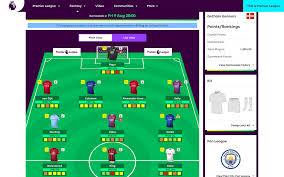

Welcome to the official League of Champions FPL Website

The League of Champions is the top tier of three divisions of affiliated FPL leagues, the second tier
being the Europa League while FPLwit and Olatostar leagues represent the third tier. Promotion and relagation of teams each take place every season
This is the third year of the League of Champions, Femi Lebron of Lebron XI won the inagural 17/18 season title on the gameweek in dramatic fashion, peeping Temtol to first place. New Trafford XI won the 18/19 season title in less dramatic fashion
Temtol (Incoming Champ) has been crowned Champion for the 19/20 season, edging Sharon (SHARpshooter) via a superior classic points score
LOC FPL Final Table
| Pos. |
Team Name |
Classic Score |
Points |
| 1 |
Incoming Champ |
2312 |
78 |
| 2 |
SHARpshooter |
2264 |
78 |
| 3 |
Dafuq FC |
2298 |
76 |
| 4 |
Wan-BiKnacker FC |
2201 |
75 |
| 5 |
Olayinka321 |
2194 |
75 |
| 6 |
FA Nexes |
2344 |
74 |
| 7 |
Samde Guru (Champ) |
2255 |
73 |
| 8 |
Rack City F.C |
2222 |
70 |
| 9 |
Balo FC |
2137 |
70 |
| 10 |
CF Jezino |
2276 |
69 |
| 11 |
Wurta FC |
2209 |
69 |
| 12 |
Teewiski FC |
2046 |
67 |
| 13 |
Bizzhle |
2039 |
61 |
| 14 |
Kbone |
2133 |
60 |
| 15 |
New Trafford XI |
2159 |
59 |
| 16 |
Bankist FC |
1948 |
58 |
| 17 |
DreamTeam V |
2096 |
54 |
| 18 |
Guerrero FC |
2050 |
54 |
| 19 |
Lebron XI |
1967 |
52 |
| 20 |
Abzee FC |
1934 |
43 |